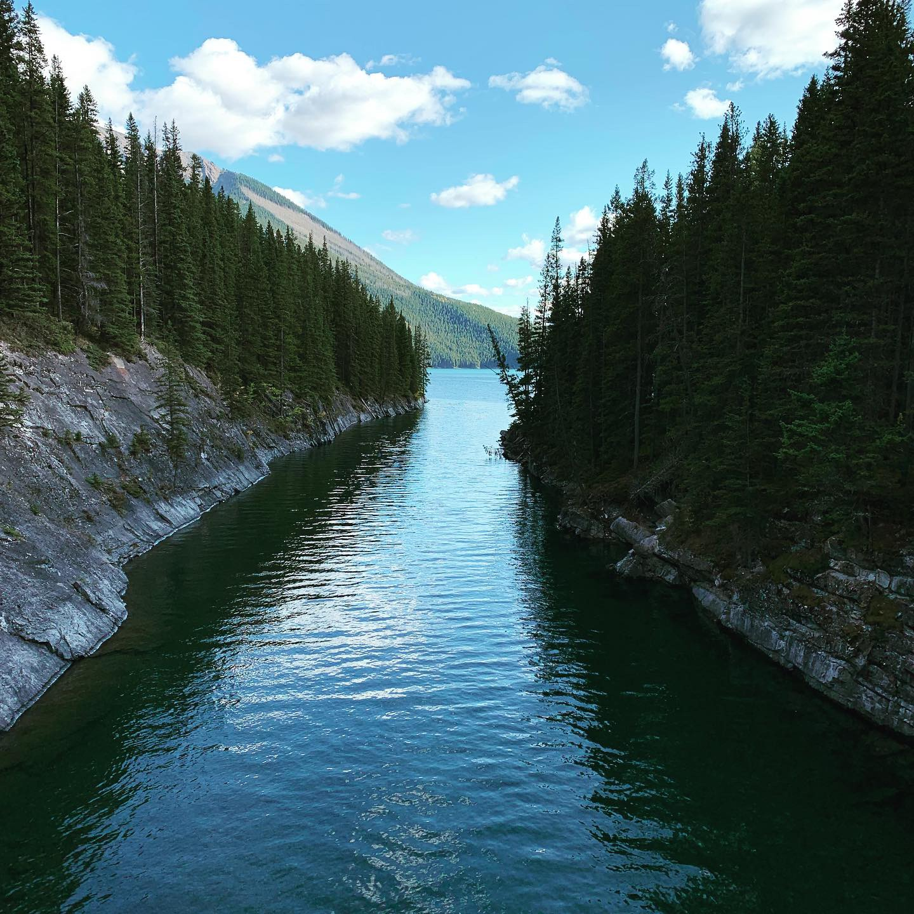
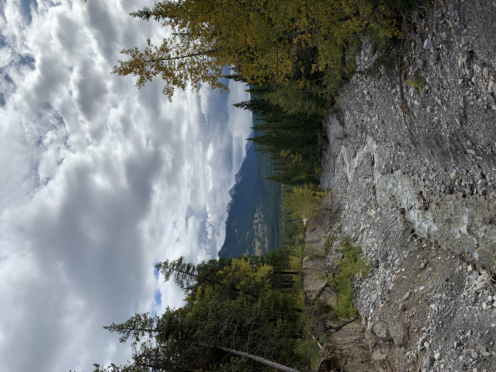
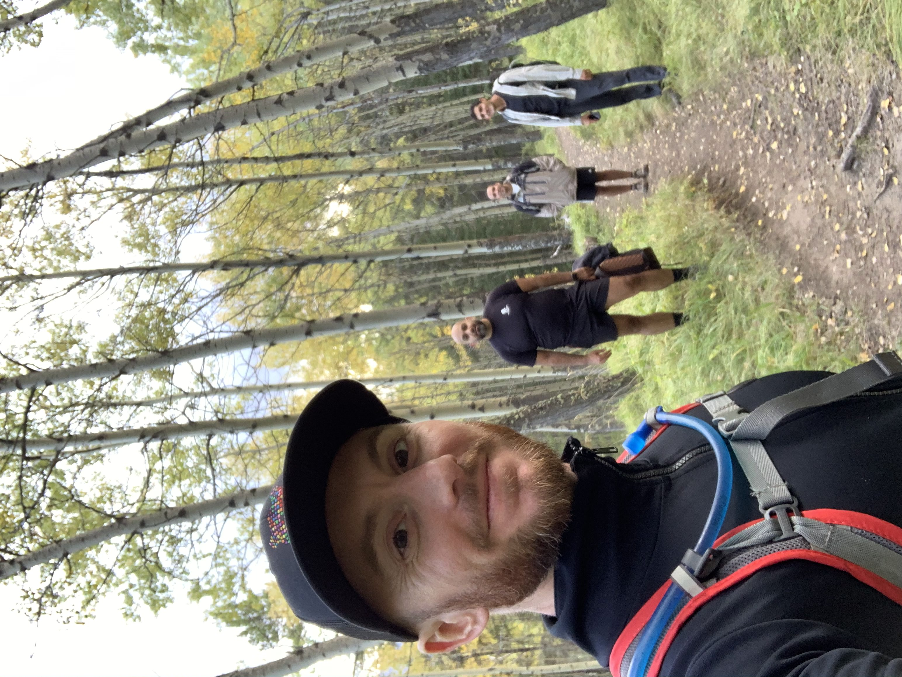
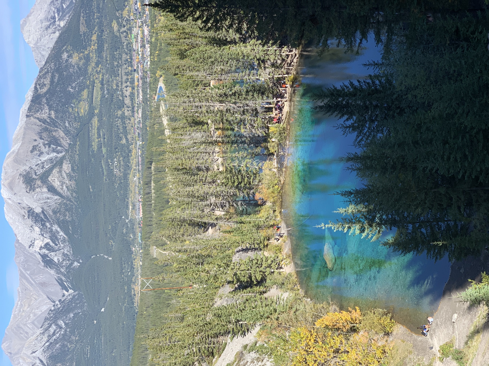

Halim Madjid
A window into my life
I love to travel. It helps open your mind. You realize that there's no one way to live life. Meeting people from other places will show you that your world view isn't the same as everyone else's.
Eventually, all things merge into one, and a river runs through it. We're part of something greater. Hiking through nature makes me realize that.

I didn't know what therapy was until I got on a boat. The wind hitting your face drowns any thoughts you had while on land.

Dont forget to stop on your hike and enjoy the view. This is Lake Minnewanka, Alberta, Canada.
Doesn't matter if the river runs dry. There's still resource and beauty all around you. Experiencing nature vistas like this reminds me to find the silver lining in the trials of life.
I love those who have love for travel. Hiking with the guys promoted some male bonding time.
Rainbows can take different shapes. A colorful hot spring represented some of the most rare colors on the color gradient.